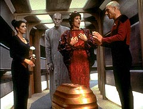
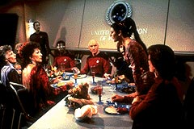
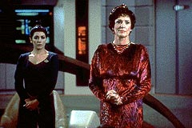

|

|
|
MANCHETE
DO EPISDIO
Tentativa
de escrever episdio orientado
a um personagem falha com Deanna Troi
Episdio
anterior | Prximo
episdio
|
Sinopse:
Data Estelar: 41294.5.
 O
relacionamento entre Deanna Troi e William Riker posto em xeque
quando a me da conselheira, Lwaxana Troi, teleportada a bordo
da Enterprise para realizar o casamento da filha com o dr. Wyatt
Miller.
O casamento fora prometido mutuamente pelos pais dos dois quando
eles ainda eram crianas, e agora os Millers, melhores amigos do
falecido pai (humano) de Deanna, querem ver a promessa cumprida.
Deanna concorda em cumprir a promessa e aceita casar-se com o noivo
que ela nem conhece. Logo depois, ele vem a bordo da Enterprise e os
dois tentam iniciar um relacionamento. Wyatt, entretanto, parece
distante, pois h anos vem tendo a viso de uma mulher em sua
mente, e Deanna no essa mulher.
Tudo se esclarece quando uma nave taleriana, contaminada por uma
praga, tenta entrar em rbita do planeta Santurio (Haven, em ingls),
onde est a Enterprise, apesar dos protestos do povo na superfcie
do planeta. Um dos tripulantes da nave a mulher cuja imagem
perseguia Wyatt h tanto tempo.
Comentrios:
"Haven" um episdio que tenta. Tenta ser bom,
tenta ter contedo, tenta ser engraado. S tenta, mas no
consegue. a histria errada, na hora errada.
Isso porque, para comeo de conversa, com apenas nove episdios
exibidos na bagagem, ningum pode esperar que o pblico v ligar
se a conselheira est querendo abandonar a carreira e deixar a
nave. E olhe que foi bvia a tentativa dos produtores de adiar a
exibio. Na verdade, "Haven" foi o
quinto episdio a ser produzido, e s o dcimo exibido.
Alm disso, os personagens simplesmente no estavam maduros o
suficiente para enfrentar um enredo to voltado a um personagem, no
caso, Deanna Troi. O resultado s podia ter sido o que foi: um
enorme vazio.
 A
histria uma verso pasteurizada de crtica aos casamentos
arranjados, muito comuns no passado para selar unio de sangue
entre famlias amigas ou para redistribuir o poder em povos
organizados por estruturas de governo hereditrias. A prtica
ocorre at hoje, em sociedades mais tradicionalistas, mas no o
suficiente para dizer que haja muito o que discutir ou refletir a
respeito.
Da mesma maneira, o conflito entre Riker e Wyatt, o noivo de Deanna,
alm de forado, equivocado. Pelo que se v do incio da
temporada, no seria Riker o revoltado com a situao, mas sim
Deanna.
Com um tema infeliz, em um momento infeliz, s sobrou apelar para o
humor. E eles bem que tentaram --trouxeram Majel Barrett para
interpretar a inconveniente, excessivamente honesta e telepata
Lwaxana Troi, a me de Deanna.
No deu certo. A personagem passa de engraada a insuportvel nos
primeiros momentos. Se h alguma graa, est nas reaes de
Picard personalidade pitoresca da me de sua conselheira.
Por fim, a apario dos tarelianos, em uma nave que representa o
que sobrou de uma espcie devastada por uma guerra de armas biolgicas,
poderia ter sido um bom tema para o episdio. Entretanto, da forma
que foi usada, no passou de um bom escapismo para tirar Wyatt do
caminho e deixar Troi seguir viagem com a Enterprise.
 To
evidente o escapismo que a relao entre Wyatt e uma sedutora
tareliana no faz o menor sentido. Telepatia interestelar sem
conhecimento prvio das pessoas envolvidas conduzindo a um destino
coisa que nem o guru, astrlogo e picareta Walter Mercado
saberia explicar...
O resumo da pera: da primeira vez, passa. Mas se algum achar
legar assistir mais de uma vez, melhor procurar um mdico.
Citaes:
Data - "Could you
please continue the petty bickering? I find it most intriguing."
(Poderiam, por favor, continuar com a implicncia mesquinha? Eu a
acho bastante intrigante.)
Trivia:
 Neste episdio Troi chama William Riker pelo apelido de
"Bill". Essa foi a segunda (e ltima vez) em toda a srie
que algum personagem o chamou assim. Posteriormente, o apelido
"Will" veio a ser utilizado (alm do "Number One"
--Imediato, na verso brasileira-- somente dito pelo capito
Picard).
Neste episdio Troi chama William Riker pelo apelido de
"Bill". Essa foi a segunda (e ltima vez) em toda a srie
que algum personagem o chamou assim. Posteriormente, o apelido
"Will" veio a ser utilizado (alm do "Number One"
--Imediato, na verso brasileira-- somente dito pelo capito
Picard).
Tambm foi a ltima vez, at o episdio final da 2 temporada,
em que Troi tratou Riker com a palavra betazide para amado:
"imzadi".
Por coincidncia, o diretor
Richard Compton comeou a dirigir este episdio exatamente um dia
depois de fazer 20 anos em que ele atuou como um personagem
coadjuvante da Srie Clssica, o tenente Washburn, no episdio
"The Doomsday Machine". Ele um dos membros da equipe de
Scotty tentando consertar a nave Constellation.
Lwaxana Troi, me de Deanna,
interpretada por Majel Barrett, viva de Gene Roddenberry (hoje ela
usa o nome Majel Roddenberry). Ela interpretou a Nmero Um (ainda
de cabelo preto) no episdio piloto de Jornada, de 1964, "The
Cage". Fez tambm o papel da enfermeira Christine Chapel (j
loira) na srie clssica. dela tambm a voz do computador nas
sries Nova Gerao, Deep Space Nine e Voyager, alm de em inmeros
jogos de Jornada para computador.
Ficha
tcnica:
Histria de C.J. Holland
Roteiro de Tracy Torm & Lan O'Kun
Direo de Richard Compton
Exibido em 30/11/1987
Produo: 005
Elenco:
Patrick Stewart como
Jean-Luc Picard
Jonathan Frakes como William Thomas Riker
Brent Spiner como Data
LeVar Burton como Geordi La Forge
Michael Dorn como Worf
Gates McFadden como Beverly Crusher
Marina Sirtis como Deanna Troi
Wil Wheaton como Wesley Crusher
Denise Crosby como Natasha "Tasha" Yar
Elenco convidado:
Majel Barrett como Lwaxana Troi
Rob Knepper como Wyatt Miller
Nan Martin como Victoria Miller
Robert Ellenstein como Steven Miller
Carel Katarina como sr. Homn
Raye Birk como Wrenn
Danitza Kingsley como Ariana
Michael Rider como chefe do transporte
Episdio
anterior | Prximo
episdio
|